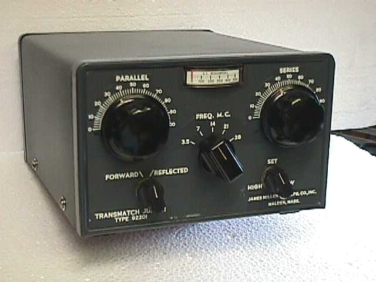

| 
The
Millen 92201 is 300 watt transmission line matching unit covering
the frequency range of 3.5 to 29.7 MHz. A very heavy duty piece
of equipment utilizing copper thru-out the chassis. The Millen
tuners were designed for matching 10 to 300 ohm unbalanced loads
through coaxial cable only and provided no internal means for
matching to balanced line feeders. The Junior was the brother
to the much larger 92200 transmatch which was able to handle 1
kilowatt. The 92200 series is a later Millen design and are still
available today (see Millen-After-Millen article).
Photo provided by Rich WA2RQY.
|